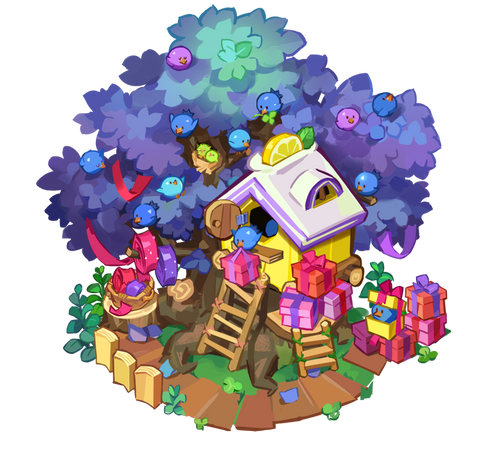

[ 목록 ]
소원나무
|

|
쿠키성 1레벨, 에피소드 1-12를 클리어하면 사용할 수 있다. 총 4개의 소원이 걸려 있는데, 각 소원별로 쿠키들이 원하는 재료/생산품을 전달해주면 된다. 자원을 전달하는 즉시 이에 상응하는 경험치와 코인을 얻으며, 한 번에 벌 수 있는 코인이 초기 100 코인에서 후엔 몇 만 코인까지 치솟기 때문에 코인 벌이의 핵심이다.
소원을 10/15/20회(총 45회) 들어줄 때마다 일일 보상을 얻을 수 있다. 10회에서는 오로라 기둥 1개를 주고, 15회에서는 오로라 벽돌과 오로라 나침반 1개씩이 지급되며, 20회에서는 3종 모두 1개씩 지급된다. 즉, 소원을 45회 들어주면 오로라 기둥/벽돌/나침반을 2개씩 확정적으로 획득할 수 있다. 그 외에도 경험의 별사탕과 크리스탈이 소량 지급된다.
고테크 생산품을 많이 열었을 수록 소원나무에 부담없이 줄 수 있는 아이템이 줄어들어서 성 레벨이 높고 해금한 생산품이 많다면 코인수급에 어려움을 겪게 된다. 9성에서 충분한 코인벌이를 하고 다음 성으로 업그레이드를 하는 것도 좋은 전략이니 고려해보자.
코인 벌이의 핵심 콘텐츠이다. 사실상 쿠키런: 킹덤의 유일한 코인 벌이 수단.
블루베리 새들이 소원나무에 걸린 쿠키들의 소원을 보고, 각 쿠키별로 요구하는 자원을 납품하는 즉시 코인과 경험치를 얻는다.
소원을 들어주고 메인 화면으로 나가면 블루베리 새가 상자를 물어다가 소원을 바란 쿠키에게 날아가서 던져주는 연출이 나온다.
한 번 소원을 들어줄 때마다 처음에는 약 100코인으로 시작해서 재료의 희귀도와 생산 시간에 따라 수만 코인을 우습게 벌어들일 수 있다.
매일 소원을 10회 / 15회 / 20회 해서 총 45회의 소원을 들어주면 순서대로 오로라 기둥 1개 / 오로라 나침반 1개 + 오로라 석판 1개 / 고급 재료 1개씩 하여 총 3종류의 고급 재료를 2개씩 확정적으로 획득할 수 있어 최소 45회는 해주는 것이 좋다. 또한 소원나무 일일 보상 획득하기는 킹덤패스 도전과제 중 하나이기도 하다.
소원은 항상 4개가 걸린다. 만일 소원이 재고가 부족하거나 아껴둬야 하는 자원을 요구한다면 '갱신하기'를 눌러서 해당 소원을 바꿔버릴 수 있는데, 한 번 갱신하기를 수행하면 10분 후에 다시 갱신되고 보석이나 가속권을 사용하여 단축시킬 수 있다.
쿠키성 레벨 4가 되어 곰젤리 열차 를 사용할 수 있게 되면, 오로라 재료의 주 수급처인 곰젤리 열차에 우선도가 밀린다. 따라서 제작이 복잡하고 시간이 오래 걸리는 재료들은 열차용으로만 남겨두고 소원으로 요구하면 갱신해버리는 게 좋다.
소원나무 뒤에 설탕노움의 집을 비롯한 작은 구조물을 배치하면 다시는 옮길 수 없는 버그가 있었으나 2월 5일 패치로 수정되었다.
5월 13일 패치로 황금 소원이 추가되었다. 특정 생산품이 포함되어 있는 소원은 황금색 종이에 적혀 나오며 일반 소원에 비해 보상이 1.5배 높다. 상위 레벨 생산품들은 대부분 여기에 해당된다.
매일 소원을 10회 / 15회 / 20회 해서 총 45회의 소원을 들어주면 순서대로 오로라 기둥 1개 / 오로라 나침반 1개 + 오로라 석판 1개 / 고급 재료 1개씩 하여 총 3종류의 고급 재료를 2개씩 확정적으로 획득할 수 있어 최소 45회는 해주는 것이 좋다. 또한 소원나무 일일 보상 획득하기는 킹덤패스 도전과제 중 하나이기도 하다.
소원은 항상 4개가 걸린다. 만일 소원이 재고가 부족하거나 아껴둬야 하는 자원을 요구한다면 '갱신하기'를 눌러서 해당 소원을 바꿔버릴 수 있는데, 한 번 갱신하기를 수행하면 10분 후에 다시 갱신되고 보석이나 가속권을 사용하여 단축시킬 수 있다.
쿠키성 레벨 4가 되어 곰젤리 열차 를 사용할 수 있게 되면, 오로라 재료의 주 수급처인 곰젤리 열차에 우선도가 밀린다. 따라서 제작이 복잡하고 시간이 오래 걸리는 재료들은 열차용으로만 남겨두고 소원으로 요구하면 갱신해버리는 게 좋다.
소원나무 뒤에 설탕노움의 집을 비롯한 작은 구조물을 배치하면 다시는 옮길 수 없는 버그가 있었으나 2월 5일 패치로 수정되었다.
5월 13일 패치로 황금 소원이 추가되었다. 특정 생산품이 포함되어 있는 소원은 황금색 종이에 적혀 나오며 일반 소원에 비해 보상이 1.5배 높다. 상위 레벨 생산품들은 대부분 여기에 해당된다.
무지갯빛 디저트 보울, 글레이즈드 링, 톡톡베리 잼, 골드리치 크로와상, 불변의 슈가 코팅 망치, 생딸기 케이크, 스윗베리 에이드, 레드베리 주스, 고급스러운 젤리빈 정식, 용과 드래곤 솜인형, 루비베리 브로치, 찬란한 요거트 화환, 빈티지 와일드 보틀, 파티파티 쉬폰케이크, 로얄 곰젤리 크라운